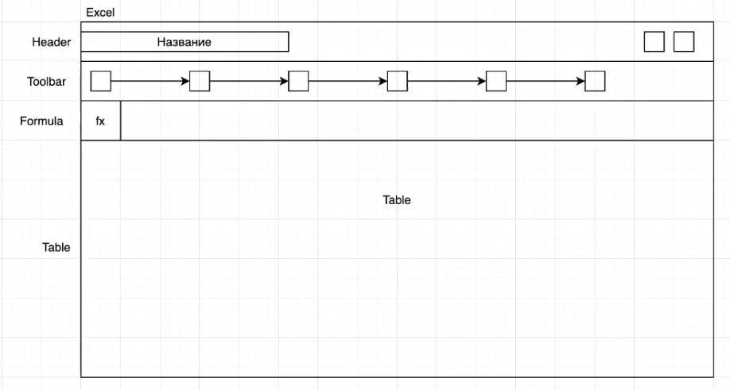
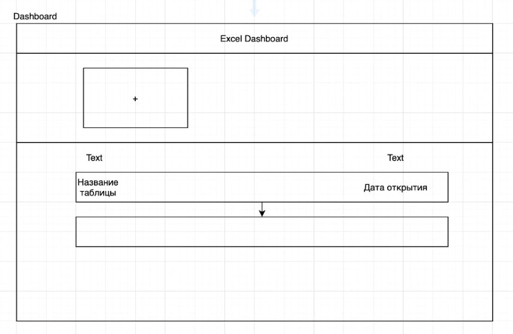

Part 1 - introduction
Part 2 - configuration
Part 3 - markup (optional)
Part 4 - beginning of the framework
Part 5 - resize the table
Part 6 - additional functionality
This course demonstrates the development of Excel in native js. Creating a simple framework to understand the basics of any other framework that is currently on the IT market.
Webpack (imports/exports)
Git
- repository on github
- configure gitignore
Git flow
Table page

Page for adding a table
